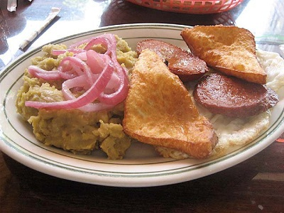

The story behind Mangu
A Dominican Dish

This is perhaps the food that is most associated with Dominicans.In its most simplified form its Mashed plantains, that right there should tell you that its Dominican. However, in its most glorious form, as a breakfast, with salami and onions, perhaps an egg to go along with it, it is a glorious way to have breakfast in the Dominican Republic.